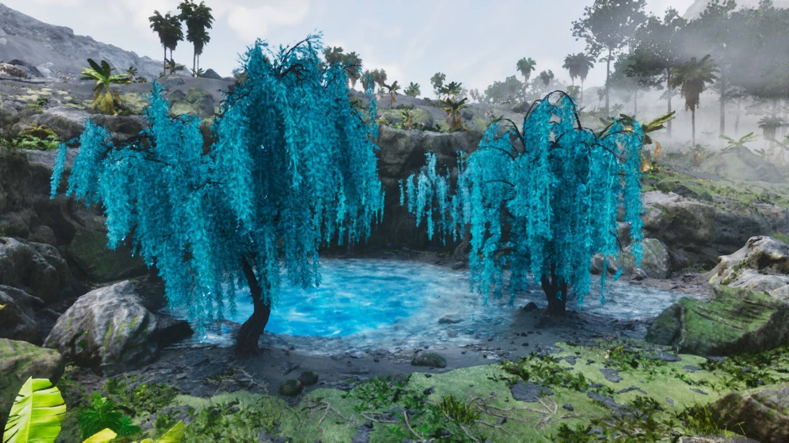
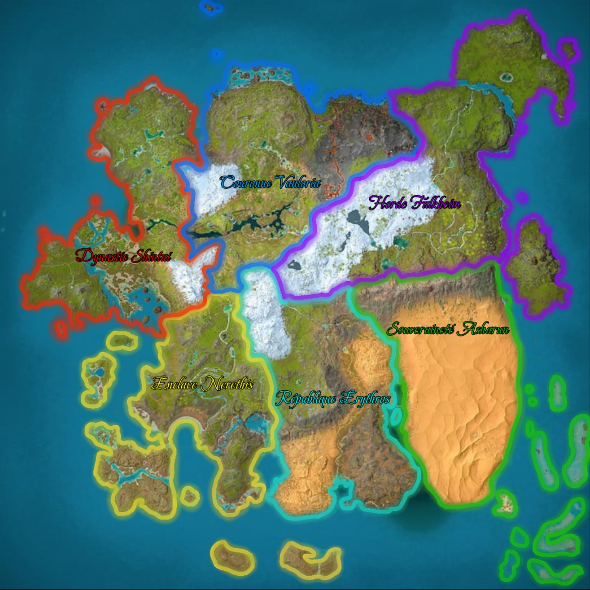
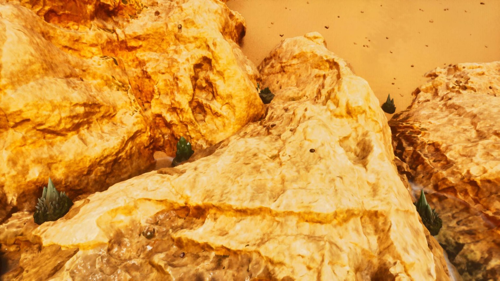
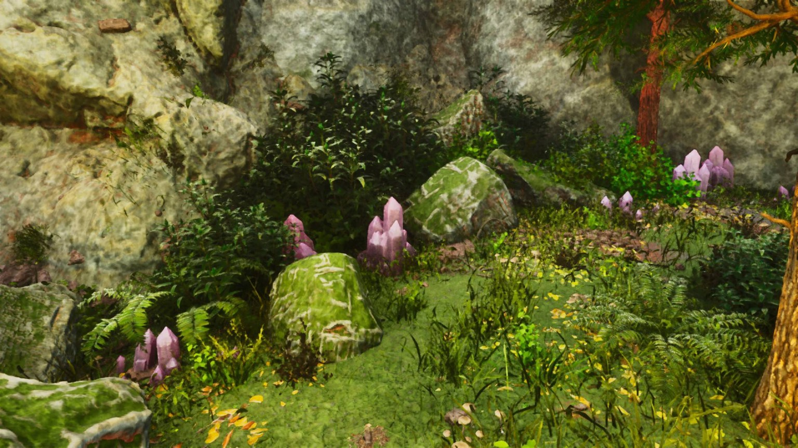
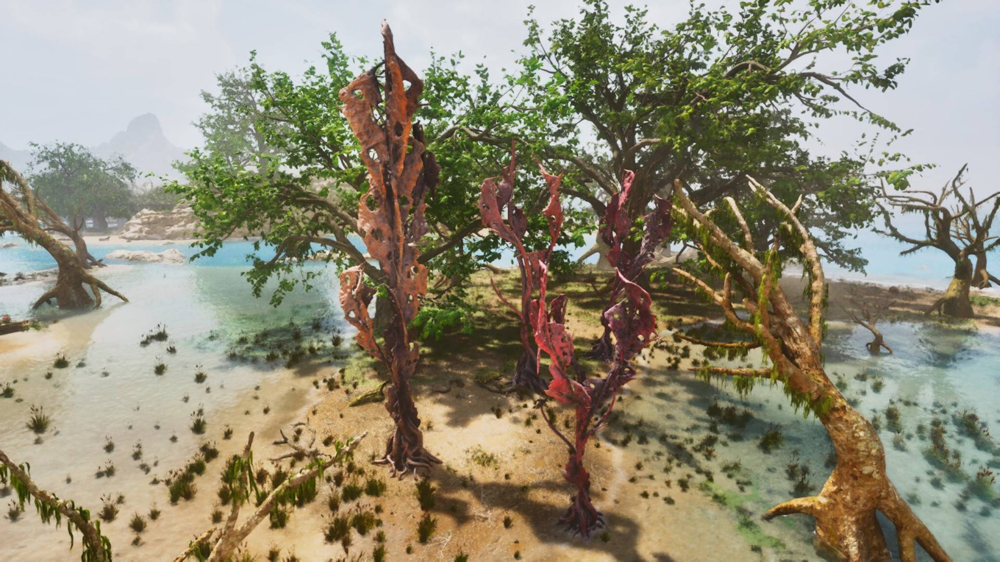
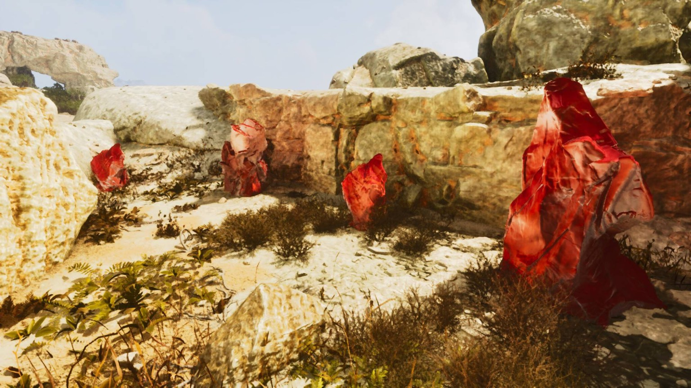

Ressource territoriale
Sève Cristallisée Bleue
Deux zones dédiées sur le territoire de Vanloria.
Connaître et protéger son domaine
Retrouvez les frontières des six royaumes, leurs ressources de progression et les règles qui encadrent les créatures apprivoisées.

Les frontières du monde
Richesse et influence
Chaque royaume possède une ressource unique qui lui est propre. Contrairement aux ressources classiques, elle ne sert à aucun craft et ne peut pas être utilisée pour fabriquer des objets.
Sa seule utilité est de permettre la progression dans les paliers de royaumes. Elle représente la richesse et l’influence du territoire, et sa collecte est indispensable pour faire évoluer votre royaume.
Afin de faciliter la récolte, deux zones de ressources ont été spécialement créées dans chaque royaume.
Aucun craft. Ces ressources servent exclusivement à la progression des paliers de royaume.

Deux zones dédiées sur le territoire de Vanloria.
Deux zones dédiées sur le territoire de Erythros.

Deux zones dédiées sur le territoire de Asharun.

Deux zones dédiées sur le territoire de Nerethis.

Deux zones dédiées sur le territoire de Shintai.

Deux zones dédiées sur le territoire de Falkheim.
Partez explorer votre territoire, récoltez ses ressources exclusives et contribuez à la montée en puissance de votre royaume.
Gestion des dinosaures
La limite augmente avec la progression du royaume.
Un couple maximum par espèce, correctement renommé.
L’autorisation dépend du métier et des décrets.
Usage hors de la vue des autres joueurs.
Consultez les tiers 2 à 5, les espèces communes et toutes les exclusivités indiquées par couleur.
Les créatures sont soumises à une limitation par royaume. Le nombre autorisé dépend du palier de votre royaume : plus celui-ci progresse, plus la limite de créatures augmente.
Informations détailléesConsultez les limites et les différents paliers dans le salon Discord #1497665586577018980.
Les créatures destinées à la reproduction ne sont pas comptabilisées dans la limite imposée par palier, à condition de respecter les règles suivantes :
Repro + Nom de l’espèce.AttentionToute créature ne respectant pas ces conditions sera considérée comme classique et comptabilisée dans la limite du palier.
Les créatures volantes sont soumises à une restriction spécifique selon le métier exercé par le joueur.
Le Lead Faction peut mettre en place un décret autorisant exceptionnellement l’utilisation d’une créature volante à un joueur ou à un métier qui n’y a normalement pas accès.
ResponsabilitéLes dirigeants de chaque tribu doivent mettre en place les rôles et restrictions nécessaires afin que l’utilisation des créatures respecte les métiers et les autorisations accordées.
Les Cryopods peuvent être achetés auprès du marchand Dompteur dans les villages de PNJ.
Il est interdit d’utiliser un Cryopod devant d’autres joueurs. Pour ranger ou sortir une créature, vous devez être hors de leur vue. En RP, vous pouvez expliquer que vous avez sifflé votre créature pour la faire partir ou revenir.
ReproductionLes créatures destinées à la reproduction doivent être rangées une fois celle-ci terminée, afin d’éviter qu’un trop grand nombre de dinosaures reste en permanence sur la carte.
Avant de partir en exploration
La progression d’un royaume repose autant sur la collecte de ses ressources que sur la bonne gestion de ses créatures.